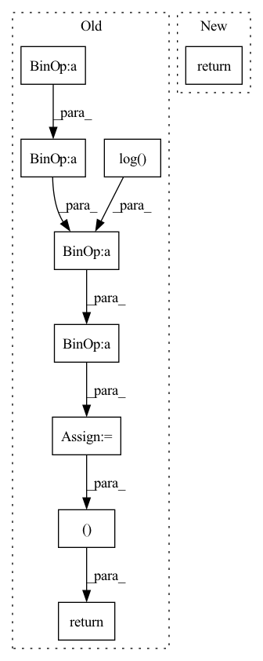

Pattern ID :205

Before Change
def forward(self, x):
device = x.device
half_dim = self.dim // 2
emb = math.log(10000) / (half_dim - 1)
emb = torch.exp(torch.arange(half_dim, device=device) * -emb)
emb = x[:, None] * emb[None, :]
emb = torch.cat((emb.sin(), emb.cos()), dim=-1)
return emb
class Mish(nn.Module):
After Change
sinusoid_in = torch.ger(input.view(-1).float(), self.inv_freq)
pos_emb = torch.cat([sinusoid_in.sin(), sinusoid_in.cos()], dim=-1)
pos_emb = pos_emb.view(*shape, self.dim)
return pos_emb
class Swish(nn.Module):
In pattern: SUPERPATTERN
Frequency: 4
Non-data size: 9
Instances
Fragment ID: 841356
Project Name: janspiry/image-super-resolution-via-iterative-refinement
Commit Name: a843610e321ec7e1898e97dd495f8991182b8b87
Time: 2021-07-30
Author: lw_jiang@foxmail.com
File Name: model/unet.py
M Class Name: SinusoidalPosEmb
N Class Name: TimeEmbedding
M Method Name: forward(2)
N Method Name: forward(2)
M Parent Class: nn.Module
N Parent Class: nn.Module
M File Name: model/unet.py
N File Name: model/unet.py
M Start Line: 37
M End Line: 42
N Start Line: 32
N End Line: 36
'>
Before Change
def forward(self, x):
device = x.device
half_dim = self.dim // 2
emb = math.log(10000) / (half_dim - 1)
emb = torch.exp(torch.arange(half_dim, device=device) * -emb)
emb = x[:, None] * emb[None, :]
emb = torch.cat((emb.sin(), emb.cos()), dim=-1)
return emb
class Mish(nn.Module):
After Change
sinusoid_in = torch.ger(input.view(-1).float(), self.inv_freq)
pos_emb = torch.cat([sinusoid_in.sin(), sinusoid_in.cos()], dim=-1)
pos_emb = pos_emb.view(*shape, self.dim)
return pos_emb
class Swish(nn.Module):
'>
Fragment ID: 841357
Project Name: janspiry/image-super-resolution-via-iterative-refinement
Commit Name: 519d366759ea639a68262c20661fa8af7e85cfc6
Time: 2021-07-30
Author: jiangliangwei@tetras.com
File Name: model/unet.py
M Class Name: SinusoidalPosEmb
N Class Name: TimeEmbedding
M Method Name: forward(2)
N Method Name: forward(2)
M Parent Class: nn.Module
N Parent Class: nn.Module
M File Name: model/unet.py
N File Name: model/unet.py
M Start Line: 37
M End Line: 42
N Start Line: 32
N End Line: 36
'>
Before Change
mean, scale = z.chunk(2, 1)
std = nn.functional.softplus(scale) + 1e-4
var = std * std
logvar = torch.log(var)
z = torch.randn_like(mean) * std + mean
kl = (mean * mean + var - logvar - 1).sum(1).mean()
return z, kl
@gin.register
class DiscreteEncoder(nn.Module):
After Change
def forward(self, x: torch.Tensor):
z = self.encoder(x)
return z
@gin.register
'>
Fragment ID: 841355
Project Name: acids-ircam/rave
Commit Name: 4ae97a330ef49e22db7a71751da91973ff59ff78
Time: 2022-05-31
Author: caillon@ircam.fr
File Name: rave/blocks.py
M Class Name: VariationalEncoder
N Class Name: VariationalEncoder
M Method Name: forward(2)
N Method Name: forward(2)
M Parent Class: nn.Module
N Parent Class: nn.Module
M File Name: rave/blocks.py
N File Name: rave/blocks.py
M Start Line: 319
M End Line: 329
N Start Line: 339
N End Line: 340